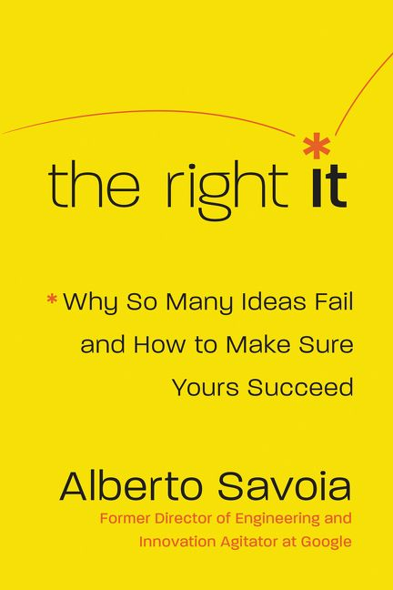

Books › Professional › Business Management
by Alberto Savoia (Author)
Fresh Perspective on Product Development
"The Right It" by Alberto Savoia is a thought-provoking read that brings a fresh perspective to the world of product development and innovation. Savoia introduces the concept of "pretotyping," a strategy aimed at testing ideas quickly and efficiently to determine if they are worth pursuing. This book is filled with practical advice, real-world examples, and a clear methodology that promises to save time, resources, and the all-too-common heartache of failed projects. Reading through the chapters, I was impressed by the depth of insight and the straightforward approach to validating ideas before going all in. It's a valuable resource for entrepreneurs, product managers, and anyone involved in creating new products or services.
However, despite its strengths, I found the book to be somewhat repetitive in parts, which occasionally slowed my progress through the material. Some concepts were reiterated more than necessary, which might test the patience of readers who are eager for the actionable insights without the extra embellishment. Additionally, while the anecdotes and case studies were generally enlightening, a few felt tangential, diluting the book's otherwise powerful message. That said, the core premise of "The Right It" is undeniably important for today's fast-paced innovation landscape. It earns a solid four stars for its enlightening approach to ensuring that you're working on the right idea before scaling, even if navigating the book's content sometimes requires a bit of persistence.